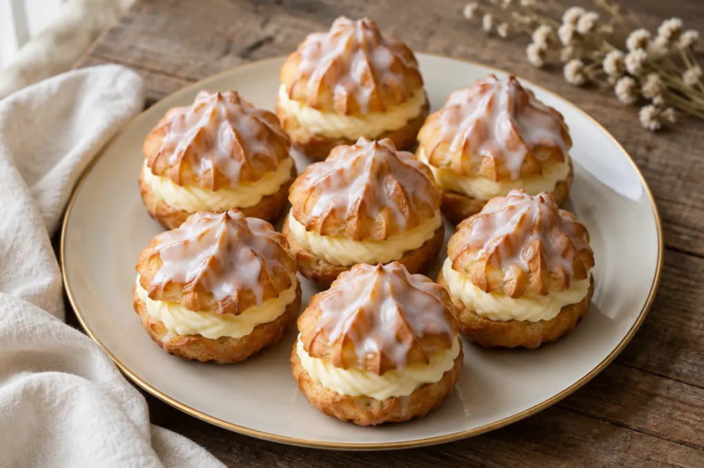

Recipes with our mixes: from Sunday dumplings to choux rings and gingerbread
Every recipe says how much mix to use, the oven temperature and how many portions it makes.

Poppy-seed rolls (šišky s mákem)
A traditional sweet supper from potato dough: rolls coated in poppy seeds and sugar, drizzled with melted butter.

Pear cake with vanilla pudding
A cake your children will enjoy making with you. The fun comes twice: once in the making, once in the eating.

Strapačky with cabbage and bacon
A Slovak classic made from our raw-potato dumpling mix: halušky with sauerkraut and crisp bacon.

Bebe biscuit slices with chocolate pudding
Want to treat your guests but you’re no Jamie Oliver? These no-bake biscuit slices are for everyone.

Whipped cream roulade
A light dessert in half an hour: slightly bitter cocoa against gently sweet whipped cream. No flour, so no gluten either.

Homemade gingerbread (perník)
Cup-measure gingerbread that is easy to make and easy to like. No scales needed — a mug is enough.

Potato-and-curd dumplings with strawberries
Summer brings ripe strawberries. A simple 20-minute recipe for anyone with a sweet tooth.

Quick choux wreaths or puffs
One choux pastry for both věnečky and větrníčky: extra butter and a 250 °C start. About 80 pieces on two trays.

Choux wreaths with vanilla cream
Classic věnečky from choux pastry with vanilla buttercream and rum glaze. About 20 pieces.

Cream horns (kremrole)
Flaky pastry tubes filled with glossy Italian meringue. About 35–40 pieces; you will need metal cream-horn tubes.

Mini choux buns (minivětrníčky)
Mini větrníčky from choux pastry with a butter, pudding and curd cream and a chocolate glaze. About 40–45 pieces.

Caramel větrníky
Větrníky with vanilla pudding cream, caramel whipped cream and caramel glaze. About 24 medium pieces.

Větrníčky with vanilla cream
Small star-piped choux puffs filled with vanilla buttercream and dipped in a white sugar glaze. About 30 pieces.

Irish sticky toffee pudding
A moist date pudding with Dutch-process cocoa and Baileys, finished with a salted toffee sauce. Serves 6.